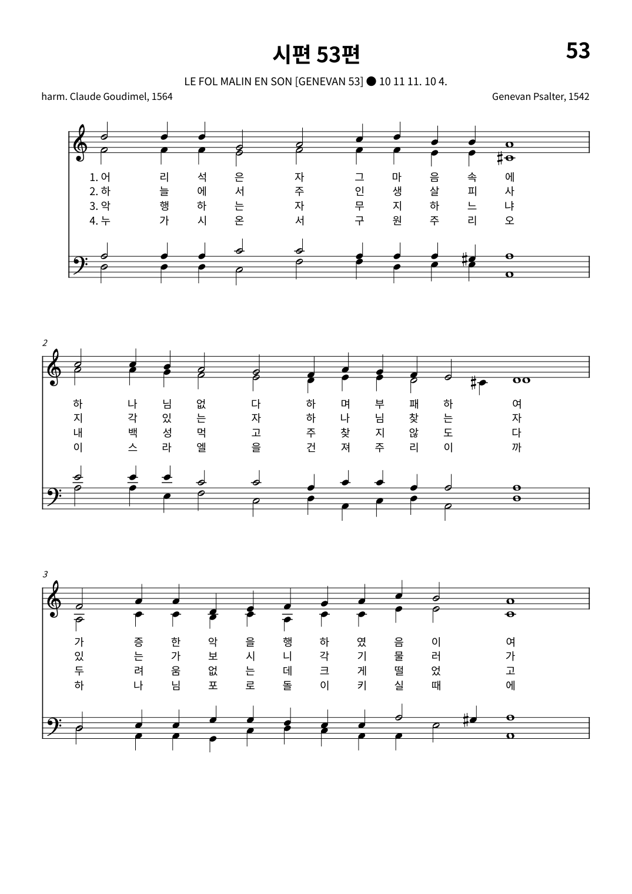

시편 53편
LE FOL MALIN EN SON [GENEVAN 53] · 10 11 11. 10 4.
곡조: Genevan Psalter, 1542 · 화성: Claude Goudimel, 1564 · 가사: 개역한글판 시편 53편 편역(AI 초벌 편역판 · 신학 감수 전) · 4절
악보 PDF MusicXML(출력용) MusicXML(반주용, 전주·반복 포함) 개역한글 시편 53편 읽기

가사
1절 (시편 1절)
어리석은 자 그 마음속에
하나님 없다 하며 부패하여
가증한 악을 행하였음이여
선을 행할 자 저희 중에는
없으니라
어리석은 자 그 마음속에
하나님 없다 하며 부패하여
가증한 악을 행하였음이여
선을 행할 자 저희 중에는
없으니라
2절 (시편 2~3절)
하늘에서 주 인생 살피사
지각 있는 자 하나님 찾는 자
있는가 보시니 각기 물러가
다 더러워져 선한 자 하나
없으니라
하늘에서 주 인생 살피사
지각 있는 자 하나님 찾는 자
있는가 보시니 각기 물러가
다 더러워져 선한 자 하나
없으니라
3절 (시편 4~5절)
악 행하는 자 무지하느냐
내 백성 먹고 주 찾지 않도다
두려움 없는 데 크게 떨었고
주가 저희 뼈 흩으셨으니
수치로다
악 행하는 자 무지하느냐
내 백성 먹고 주 찾지 않도다
두려움 없는 데 크게 떨었고
주가 저희 뼈 흩으셨으니
수치로다
4절 (시편 6절)
누가 시온서 구원 주리오
이스라엘을 건져 주리이까
하나님 포로 돌이키실 때에
야곱 즐겁고 이스라엘은
기뻐하리
누가 시온서 구원 주리오
이스라엘을 건져 주리이까
하나님 포로 돌이키실 때에
야곱 즐겁고 이스라엘은
기뻐하리